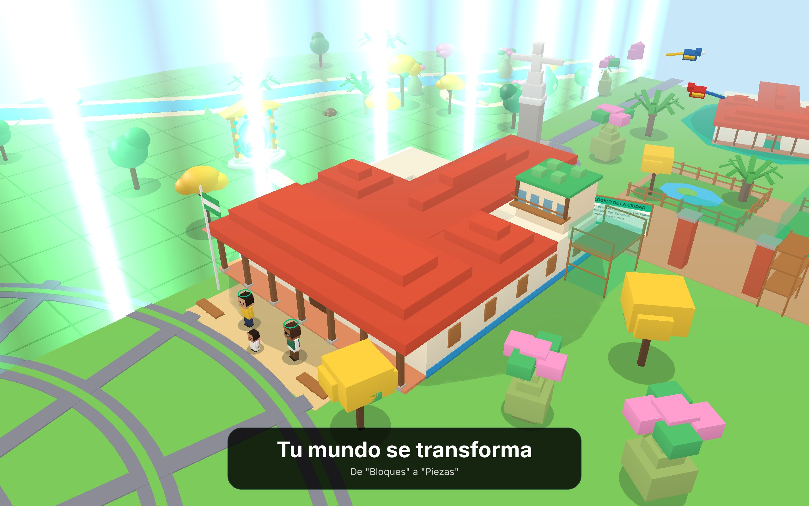
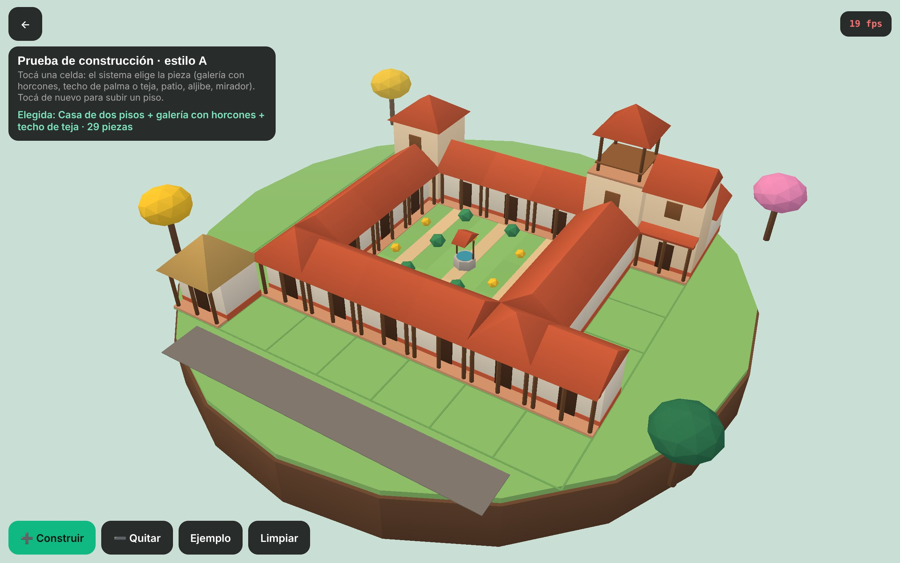

Tu mundo crece con vos. La visión final son 12 evoluciones, una por año, de 1.º de primaria a la promoción. Para la presentación hay 6 escalones en la línea del estilo B que elegiste: cada uno se ve mejor que el anterior y, al pasar de curso, el mundo se transforma. Todos muestran la misma escena: tu colegio cruceño creciendo, la ciudad de Santa Cruz que empieza vacía (solo con sus hitos) y que los cursos construyen, una obra pública en marcha (el zoológico), un portal para visitar otro colegio, los profes Taji y Jochi y un alumno de ese tramo.
📱 Las escenas en 3D se ven y se juegan mejor con el celular en horizontal.

"Anda en" es una estimación: en el servidor de pruebas no hay tarjeta gráfica (ver la tabla de fps). Hay que confirmarlo en las tablets reales.

Tocás una celda y el sistema elige la pieza solo, según lo que hay alrededor: si una celda queda rodeada se vuelve patio (con aljibe); hacia el patio y hacia la calle aparecen galerías con horcones; las casas chicas llevan techo de palma y las grandes de teja; tocás de nuevo y sube un piso; al tercero es mirador. Arriba a la derecha se ven los fps.
Las direcciones de arte de la investigación. Elegiste B: los escalones 3 a 6 siguen su línea. "Piezas" sale de A. C (pixel) quedó fuera por decisión tuya.
Cargando…
Medido en el navegador del servidor de pruebas, sin tarjeta gráfica (todo por procesador): es un piso pesimista. La meta es ≥ 30 fps en la tablet real de gama baja; hay que medirlo ahí. Cada escena abierta muestra sus fps arriba a la derecha.